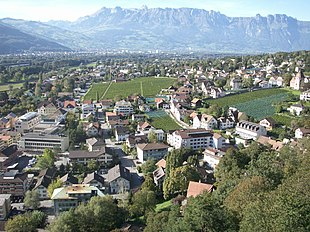

Economy of Liechtenstein
The factual accuracy of parts of this article (those related to table) may be compromised due to out-of-date information. (November 2010) |
|  | |
| Currency | Swiss franc (CHF) |
|---|---|
Country group | Developed/Advanced High-income economy[1] |
| Statistics | |
| Population | |
| GDP | |
GDP growth | |
GDP per capita | |
GDP by sector | Agriculture: 7%; industry: 41%; services: 52% (2014) |
Population below poverty line | N/A |
| N/A | |
Labour force | 38,520 (2012) (2015 est.), 51% of whom commute daily from Austria, Switzerland, or Germany |
Labour force by occupation | Agriculture: 0.8%; industry: 39.4%; services: 59.95% (2010) |
| Unemployment | |
Main industries | Electronics, metal manufacturing, dental products, ceramics, pharmaceuticals, financial services, food products, precision instruments, tourism, optical instruments |
| External | |
| Exports | |
Export goods | Small specialty machinery, connectors for audio and video, parts for motor vehicles, dental products, hardware, prepared foodstuffs, electronic equipment, optical products |
Main export partners | n/av |
| Imports | |
Import goods | Agricultural products, raw materials, energy products, machinery, metal goods, textiles, foodstuffs, motor vehicles |
Gross external debt | 0% (2001) debt holder of Switzerland, Austria and US |
| Public finances | |
| N/A | |
| Revenues | $1.29 billion (2011 est.) |
| Expenses | $1.372 billion (2011 est.) |
| Standard & Poor's:[7] AAA (Domestic) AAA (Foreign) AAA (T&C Assessment) Outlook: Stable[8] | |
All values, unless otherwise stated, are in US dollars. | |
{kind=link}
The economy of Liechtenstein is based on industry, with a small but significant agricultural sector, and services (especially general services, including tourism and information technology). The country participates in a customs union with Switzerland and uses the Swiss franc as its national currency. It imports more than 85% of its energy requirements. Liechtenstein has been a member of the European Free Trade Association (EFTA) since 1991 (previously its interests had been represented by Switzerland). It also has been a member of the European Economic Area (EEA) since May 1995 and participates in the Schengen Agreement for passport-free intra-European travel.
History
[edit]Liechtenstein's historical customs union with Austria was dissolved in 1919. A customs treaty was signed in 1923 and since its entering into force in 1924, Liechtenstein and Switzerland have been in a customs union with each other and as such the borders between the two countries are open. The German village Büsingen am Hochrhein and the Italian village Campione d'Italia also form part of this customs union (the latter albeit in a de facto manner), which is often referred to as the Swiss customs area.
Liechtenstein utilizes the Swiss franc as its national currency. Swiss border police and customs officers secure its frontier with Austria. Currently there are 21 Swiss border guards stationed in Liechtenstein and 20 Austrian border guards securing its border (as of 2011).
Liechtenstein is a member of EFTA, and joined the European Economic Area (EEA) in 1995 in order to benefit from the EU internal market. The capitalist economy and tax system make Liechtenstein a safe, trustworthy and success-oriented place for private and business purposes, especially with its highly modern, internationally laid-out infrastructure and close connections to Switzerland.
The Principality of Liechtenstein has gone through economic and cultural development in the last 50 years like no other Western country. In the last half century, Liechtenstein has developed from a mainly agricultural state to one of the most highly industrialized countries in the world.[9]
Foreign trade
[edit]{kind=link}
Besides its efficient industry, there also is a strong services sector. Four out of ten employees work in the services sector, a relatively high proportion of whom are foreigners, including those who commute across the border from neighboring Switzerland, Austria and Germany. Industrial exports more than doubled in 20 years from $1.21 billion (SFr. 2.2 billion) in 1988 to $2.9 billion (SFr. 4.6 billion) in 2008. Some 15.7% of Liechtenstein goods are exported to Switzerland, 62.6% to the EU and 21.1% to the rest of the world.[10][citation needed]
The United States has been the most important export market for Liechtenstein in recent times, totaling $561 million (SFr. 876 million); Germany is second, with $479 million (SFr. 748 million) worth of imports, and Switzerland third, with $375 million (SFr. 587 million).
About 32% of the country's revenues are invested in research and development, one of the driving forces of the success of Liechtenstein's economy. Total R&D spending in 2000 rose by 20.7% to approximately $140 million (213 million francs).[11]
Banking and finance
[edit]{kind=link}
The Principality of Liechtenstein also is known as an important financial centre, primarily because it specializes in financial services for foreign entities. The country's low tax rate, loose incorporation and corporate governance rules, and traditions of strict bank secrecy have contributed significantly to the ability of financial intermediaries in Liechtenstein to attract funds from outside the country's borders. The same factors made the country attractive and vulnerable to money launderers, although late 2009 legislation has strengthened regulatory oversight of illicit funds transfers.[12]
Liechtenstein has chartered 17 banks, three non-bank financial companies, and 71 public investment companies, as well as insurance and reinsurance companies. Its 270 licensed fiduciary companies and 81 lawyers serve as nominees for, or manage, more than 73,000 entities (primarily corporations, institutions, or trusts), partly for non-Liechtenstein residents. About one-third of these entities hold the controlling interest in other entities, chartered in countries other than Liechtenstein. The Principality's laws permit the corporations it charters to issue bearer shares. Until recently, the Principality's banking laws permitted banks to issue numbered accounts, but new regulations require strict know-your-customer practices for all new accounts.[13]
Taxation
[edit]{kind=link}
Liechtenstein's standard rate of VAT (Mehrwertsteuer) is identical to Switzerland's for it must mirror the latter's continually and is currently 7.7%. The reduced rate is 2.5%. A special rate of 3.7% is in use in the hotel industry.[14]
In July 2015, Liechtenstein and Switzerland signed a new agreement on double taxation, which took effect in December 2016, superseding the previous one from 1995. Some differences on the withholding tax arose, but Switzerland did not agree to introduce this practice to residents of Liechtenstein working in Switzerland.[15]
In November 2016, the parliament of the principality decided with a large majority to introduce an agreement of automatic information exchange with 27 new treaty partners, including Switzerland. Data collection will start in 2018, and effectual exchange of account information is planned for 2019.[16]
Statistics
[edit]- GDP (PPP): $4.826 billion (2009)
- GDP – real growth rate: 3.8% (2008)
- GDP (PPP) – per capita: purchasing power parity – $141,100 (2008)
- Inflation rate (consumer prices): 0.7% (2011)
- Labor force: 35,440 of whom about 10,440 are natives 7,550 are foreigners; 17,450 commute from Austria, Switzerland, and Germany to work each day (2008)
- Labor force – by occupation: agriculture: 8%; industry: 41%; services: 51% (31 December 2008)
- Unemployment rate: 1.9% (December 2020)[17]
- Currency: Swiss franc (CHF)
- Exchange rates: Swiss francs per US dollar – 1.3467 (2003), 1.5586 (2002), 1.6876 (2001), 1.6888 (2000), 1.5022 (1999)
- Fiscal year: calendar year
State budget
[edit]- revenues: $420.8 million
- expenditures: $420.1 million, including capital expenditures of $NA (2000 est.)
Industries
[edit]The principal industries are electronics, metal manufacturing, textiles, ceramics, pharmaceuticals, food products, precision instruments, and tourism.[18]
- Industrial production growth rate: N/A
Electricity
[edit]- production by source[citation needed]
- fossil fuel: 3,330 MWh (3.12%)
- hydro: 76,166 MWh (94.2%)[citation needed]
- nuclear: none (0%)
- solar/wind: 1,361 MWh (2.68%)[citation needed]
- Electricity – production: 80,105 MWh (2010)
- Electricity – consumption: about 350,645 MWh (2010)
- Electricity – exports: none
- Electricity – imports: about 270,540 MWh (2010)
Agriculture
[edit]Exports
[edit]- Commodities: small specialty machinery, dental products, stamps, hardware, pottery
- Partners: EU 62.6%, Others 21.1% (Germany, the US, the UK, France, Italy, Austria, Taiwan and Japan), Switzerland 15.7% as of (2008)
Imports
[edit]- Commodities: agricultural products, raw materials, machinery, metal goods, textiles, foodstuffs, motor vehicles
- Partners: member states of the European Union, Switzerland, Germany and the US.
Companies
[edit]In 2022, the sector with the highest number of companies registered in Liechtenstein is Services with 7,666 companies followed by Finance, Insurance, and Real Estate and Unknown industry with 5,240 and 3,104 companies respectively.[19]
See also
[edit]- Healthcare in Liechtenstein
- List of foundations established in Vaduz
- List of companies of Liechtenstein
References
[edit]- ^ "World Bank Country and Lending Groups". datahelpdesk.worldbank.org. World Bank. Retrieved 29 September 2019.
- ^ "Population on 1 January". ec.europa.eu/eurostat. Eurostat. Retrieved 13 July 2020.
- ^ "GDP (current US$) – Liechtenstein". data.worldbank.org. World Bank. Retrieved 4 November 2022.
- ^ "GDP per capita (current US$) – Liechtenstein". data.worldbank.org. World Bank. Retrieved 4 November 2022.
- ^ "Human Development Report 2023/2024" (PDF). United Nations Development Programme. 13 March 2024. Archived (PDF) from the original on 13 March 2024. Retrieved 4 May 2024.
- ^ "Liechtenstein in Figures, 2019" (PDF). llv.li. Retrieved 19 August 2019.
- ^ "Sovereigns rating list". Standard & Poor's. Retrieved 26 May 2011.
- ^ Rogers, Simon; Sedghi, Ami (15 April 2011). "How Fitch, Moody's and S&P rate each country's credit rating". The Guardian. Retrieved 31 May 2011.
- ^ United States. Department of State. Bureau of Public Affairs (1989). "Backgr. Notes Ser. Liechtenstein". Department of State Publication. Background Notes Series. United States. Department of State.: 1–4. PMID 12178078. Retrieved 9 November 2022.
- ^ "Liechtenstein – Trade Statistics". 23 March 2017. Retrieved 3 March 2021.
- ^ "Liechtenstein (11/03)". U.S. Department of State. Retrieved 16 March 2021.
- ^ "Liechtenstein (06/09)". U.S. Department of State. Retrieved 28 July 2023.
- ^ "FMA - Anti-money laundering". www.fma-li.li. Retrieved 17 November 2021.
- ^ "Avalara VATlive".
- ^ Liechtenstein scheitert mit Quellensteuer für Grenzgänger(in German). Neue Zürcher Zeitung (Schweiz). Retrieved 10 December 2017.
- ^ Liechtenstein und Schweiz tauschen Kontoinformationen aus(in German). Blick online. Retrieved 10 December 2017.
- ^ "Unemployment rate and employment data in Liechtenstein". take-profit.org. Retrieved 7 June 2022.
- ^ "The World Factbook — Central Intelligence Agency". www.cia.gov. Retrieved 3 August 2017.
- ^ "Industry Breakdown of Companies in Liechtenstein". HitHorizons.